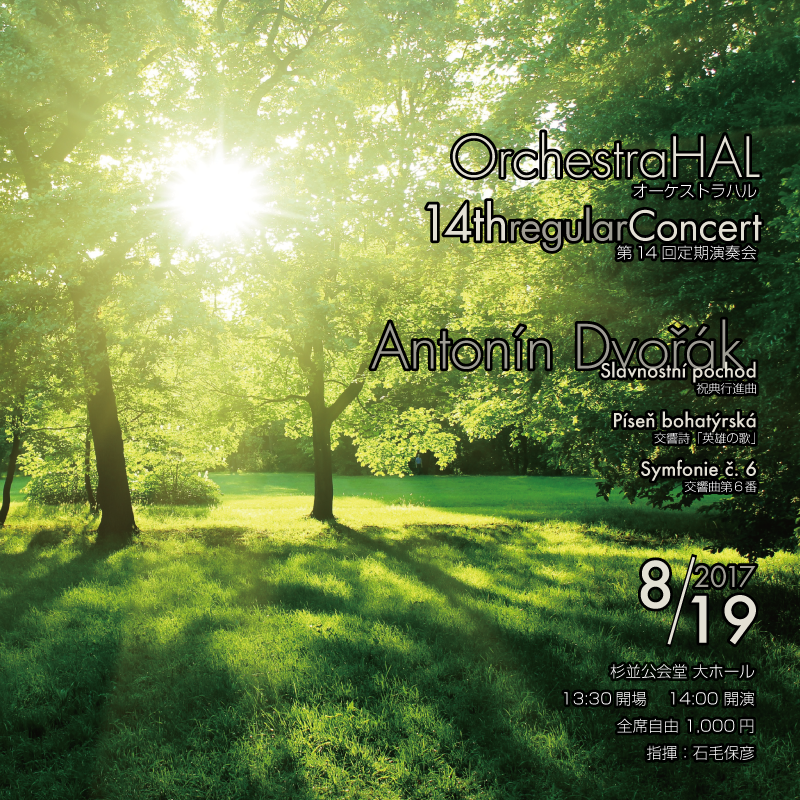

第20回定期演奏会
2022年3月26日(土) ティアラこうとう 大ホール
ブラームス／悲劇的序曲
ボロディン／中央アジアの草原にて
チャイコフスキー／交響曲第5番
指揮: 石毛保彦
特別演奏会
2021年4月29日(木・祝) めぐろパーシモンホール 大ホール
【管楽の部】
J.ヴァン＝デル＝ロースト／フラッシングウィンズ、カンタベリーコラール、アルセナール
G.ホルスト／吹奏楽のための第一組曲
【弦楽の部】
P.チャイコフスキー／弦楽セレナーデ
【管弦楽の部】
J.ハイドン／交響曲第104番「ロンドン」
指揮: 石毛保彦
第19回定期演奏会
2020年2月1日(土) 杉並公会堂 大ホール
ベルリオーズ／序曲「ローマの謝肉祭」
リヒャルト・シュトラウス／交響詩「ドンファン」
ベートーヴェン／交響曲第3番「英雄」
指揮: 石毛保彦
第18回定期演奏会
2019年8月24日(土) 杉並公会堂 大ホール
プッチーニ／交響的前奏曲 イ長調
マーラー／交響曲第1番
指揮: 石毛保彦
第17回定期演奏会
2019年2月16日(土) 杉並公会堂 大ホール
ワーグナー／「タンホイザー」序曲
リスト／交響詩「レ・プレリュード」
ブラームス／交響曲第3番
指揮: 石毛保彦
第16回定期演奏会
2018年8月26日 杉並公会堂 大ホール
リムスキー=コルサコフ／歌劇「皇帝の花嫁」より序曲
ムソルグスキー／「禿山の一夜」
グラズノフ／交響曲第5番
指揮: 石毛保彦
第15回定期演奏会
2018年2月3日 杉並公会堂 大ホール
ショスタコーヴィッチ／祝典序曲
プロコフィエフ／交響組曲「キージェ中尉」
ベートーヴェン／交響曲第2番
指揮: 石毛保彦

第14回定期演奏会
2017年8月19日 杉並公会堂 大ホール
ドヴォルザーク／祝典行進曲
ドヴォルザーク／交響詩「英雄の歌」
ドヴォルザーク／交響曲第6番
指揮: 石毛保彦
第13回定期演奏会
2017年2月26日 ルネこだいら 大ホール
リヒャルト・シュトラウス／死と浄化
ブラームス／交響曲第1番
指揮: 石毛保彦
第12回定期演奏会
2016年8月28日 ティアラこうとう 大ホール
シベリウス／カレリア序曲
シベリウス／エン・サガ
シベリウス／交響曲第2番
指揮: 石毛保彦
第11回定期演奏会
2016年2月28日 ティアラこうとう 大ホール
チャイコフスキー／バレエ音楽「白鳥の湖より」
チャイコフスキー／交響曲第6番「悲愴」
指揮: 石毛保彦
第10回定期演奏会
2015年9月26日 ティアラこうとう 大ホール
シューマン／序曲「ジュリアス・シーザー」
サン＝サーンス／ヴァイオリン協奏曲第3番
シューマン／交響曲第1番
ヴァイオリン独奏：藤田有希／指揮: 石毛保彦
第9回定期演奏会
2015年2月22日 三鷹市芸術文化センター 風のホール
シューマン／交響曲第4番
チャイコフスキー／交響曲第4番
指揮: 石毛保彦
第8回定期演奏会
2014年9月14日 ティアラこうとう 大ホール
シベリウス／交響曲第3番
シューベルト／交響曲第8番「ザ・グレート」
指揮: 石毛保彦